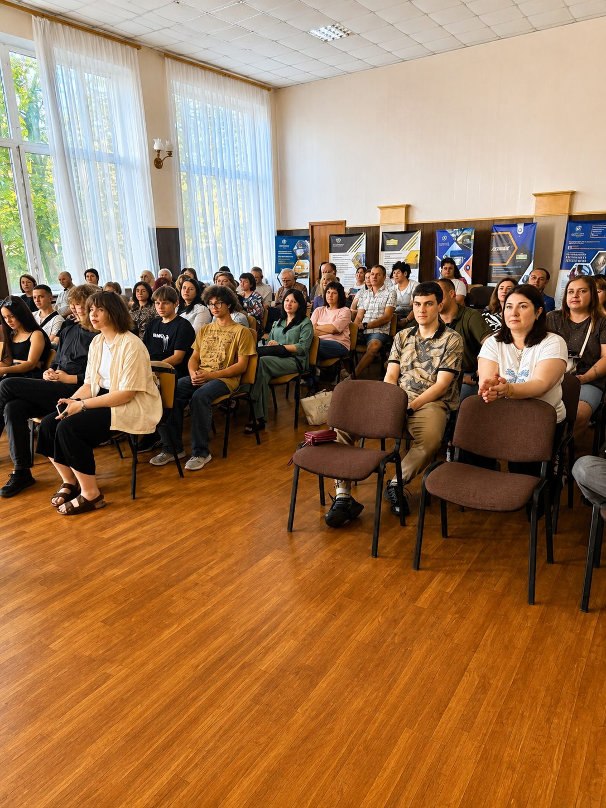

Студентське життя
Навчання — це лише частина шляху. Твоя особистість гартується на хакатонах, у спортивних секціях, на творчих фестивалях і під час роботи в студентському самоврядуванні. Тут — реальні фото кампусу, соцмережі університету та відео про те, як усе відбувається насправді.
Студентська платформа Політехніки
Це сучасний цифровий екопростір найстарішого вищого технічного навчального закладу регіону. Тут зібрано все: від розкладу та освітніх сервісів до наукових хакатонів, міжнародних стажувань і унікального ком'юніті.
Повний студентський портал: керуй своїм навчанням та дозвіллям
Ми адаптували складну структуру університету під гнучкий формат, який потрібен сучасному студенту в щоденному житті.
Університет
Дізнайся про історію створення, ректорат, інститути та унікальний кампус у центрі міста.
Читати історію →Навчання
Актуальні освітні програми, силабуси, доступ до індивідуальних траєкторій та сесійного розкладу.
Переглянути спеціальності →Допомога з ДЗ
Студентська взаємодопомога з предметами, підготовкою до екзаменів, курсовими та проєктами.
Попросити допомогу →Знайомства й події
Туси, квести, клуби за інтересами та все, де можна знайти своїх людей у Політехніці.
Дивитись події →Фото зі студентського життя
Аудиторії, лекторії, спортзали й корпуси — так виглядає Політехніка щодня.
Випуск, вручення дипломів і посвята в студенти
Дипломи, мантії та щирі емоції — так закінчується і так починається шлях у Політехніці.
Події та хакатони
Щорічні ІТ-змагання, PolyTech Hack, інженерні виставки, Дні першокурсника та Студвесна в актовій залі головного корпусу.
Спортивні секції
Бадмінтон, футзал, скелелазіння та оновлений зал єдиноборств для тренувань та змагань між інститутами.
Студентський уряд
Захист твоїх прав, організація крутих кіновечорів, благодійних ярмарків, волонтерських зборів та поїздок.
Відео про життя університету ▶
 ▶
▶
Більше відео — на офіційному YouTube-каналіуніверситету або на сторінці«Фото і відео».
Соціальні мережі Політехніки
Анонси подій, ефіри, новини факультетів і закулісся студентського життя — щодня в соцмережах.
Дніпровська Політехніка як сучасний інноваційний кампус
Студенти НТУ «ДП» мають доступ до передової інфраструктури: відреставровані коворкінги, технологічні лабораторії, лекторії європейського зразка та спеціалізовані зони розвитку.
Концепція World Students об'єднує технічну міць університету з комфортом та естетикою. Переконайся, як виглядають наші внутрішні локації для навчання, презентацій та спорту.

Конференц-зали для захистів, лекцій і подій Читальні зали та підготовка до сесії
Читальні зали та підготовка до сесії
Коротко про студентське життя
Будь активним разом із нами!
Слідкуй за анонсами подій у наших соціальних мережах, бери корисні конспекти від старшокурсників та створюй власні проєкти на базі платформи.
Зв'язатися зі Студрадою